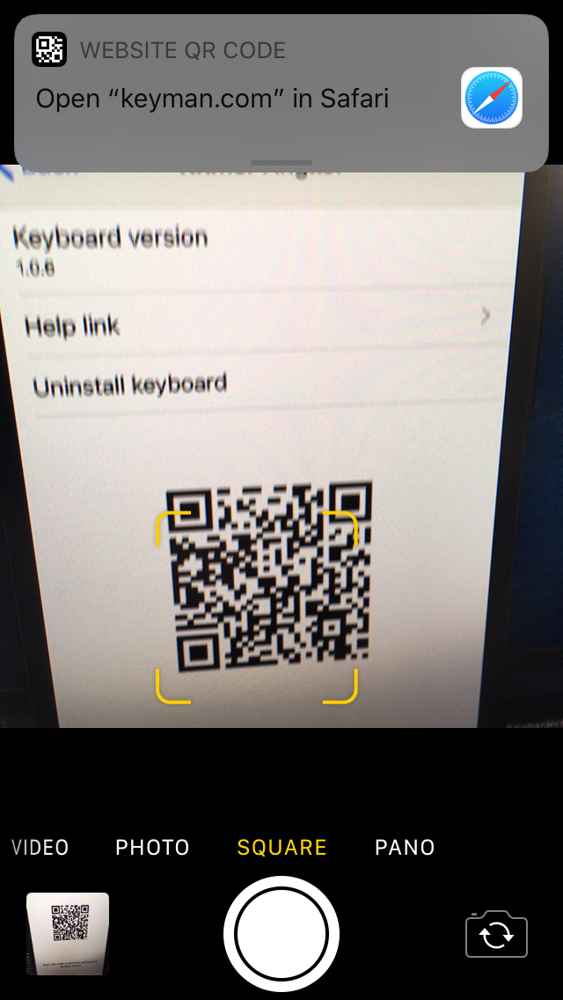

Keyman for iPhone and iPad: Sharing Keyboards
Sharing the File
If you have installed a custom keyboard or dictionary from a file, Keyman keeps a copy of that file on your device. You can find these copies in the iOS Files app.

Simply select the "Keyman" folder to view these files.

From here, longpress the file for the keyboard or dictionary you wish to share, then click Share to view sharing options.
Sharing via QR code
For keyboards and dictionaries downloaded directly through the app, you can provide friends with a scannable QR code. First, find the resource through the Settings menu under Installed Languages.


When you select the keyboard, a page like the following should appear:

Note that QR codes are only provided for certain keyboards and dictionaries at this time.
Installing from QR code
To install from QR code, simply launch your device's Camera app and point it at the code, as seen below.

Selecting the notification seen at the top will lead you to the following page:

Select the big Install on iPhone (or Install on iPad) option will then download the file for easy installation. (Refer to Installing custom keyboards as necessary.)